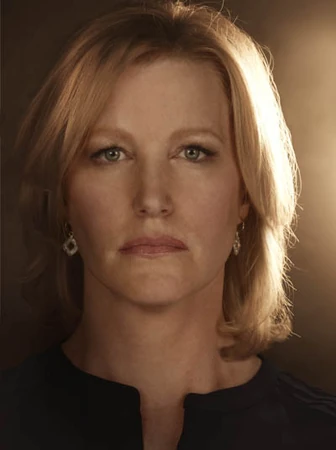

Personajes principales

Walter White
Profesor de química convertido en fabricante de metanfetamina. Inteligente, calculador y cada vez más peligroso.

Jesse Pinkman
Exalumno de Walter. Su evolución lo convierte en uno de los personajes más humanos y trágicos de la serie.

Skyler White
La esposa de Walter, que intenta mantener unida a su familia mientras descubre la verdad sobre su marido.